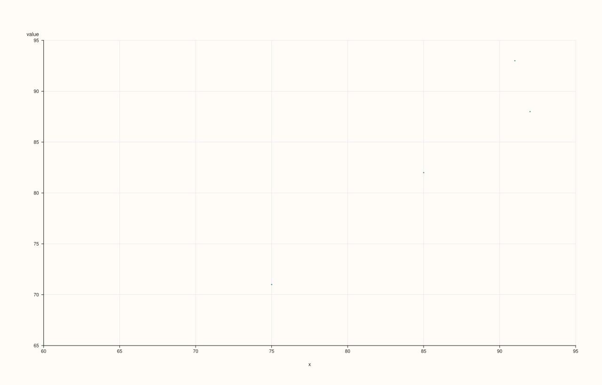
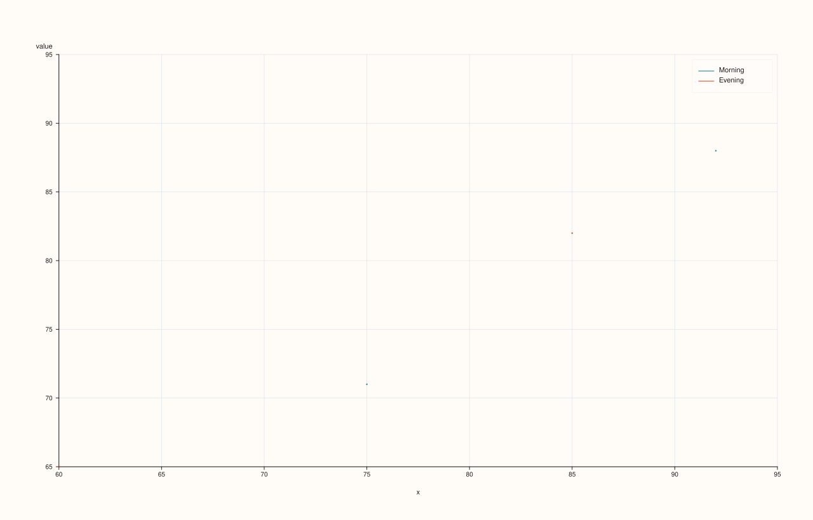

StreamPlotAccessor::scatter¶
Back to StreamPlotAccessor API Reference
Signatures¶
StreamPlotAccessor::scatter(const Stream& x) const -> pluss::pl::Studio
StreamPlotAccessor::scatter(const Stream& x, const ScatterPlotOptions& options) const -> pluss::pl::Studio
StreamPlotAccessor::scatter(const Stream& x, const Stream& hue) const -> pluss::pl::Studio
StreamPlotAccessor::scatter(const Stream& x, const Stream& hue, const ScatterPlotOptions& options) const -> pluss::pl::Studio
What It Does¶
Draws one point per row at (x, value), where value is the bound stream, optionally
split into separate, distinctly colored/labeled point groups by a companion hue stream.
Every overload forwards to ThreadPlotAccessor::scatter after
Stream::to_thread().
Unlike every other method on this accessor, scatter() has no zero-argument overload —
x is always required, since a scatter plot needs two independent axes, not one axis plus
a case index the way line()/bar() fall back to.
See line()’s important callouts for the shared naming and row-label
inheritance rules — here, x always wraps to a column named "x" and hue always wraps
to a column named "hue" (Stream has no name() to override either, unlike the
equivalent Thread-level method).
Important
hue must be Note-, Timeline-, or TimeIndex-kind, same as the 2D accessor
Because scatter() ultimately delegates to
DataFramePlotAccessor::scatter’s explicit hue_feature
argument, a hue stream that resolves to a plain numeric Series throws
"DataFrame::plot().scatter: hue feature 'hue' must be note-like or time-like" — note the
message names the generic fallback column "hue", not any name of the stream you passed,
since Stream never contributes one. See Example 5.
Parameters¶
x (const Stream&, required)
The companion stream for the horizontal axis. Must match the bound stream’s size, or
the call throws "Thread::plot: thread size mismatch" — see Example 6.
hue (const Stream&, optional)
Optional companion stream splitting points into separate colored/labeled groups. Must
be Note-, Timeline-, or TimeIndex-kind — see the important callout above.
options (ScatterPlotOptions)
The identical struct documented on
CatalogPlotAccessor::scatter (alpha, line_width,
fit_line, fit_order, fit_ci, fit_confidence_level).
Returns¶
pluss::pl::Studio
A figure with one pane: a single point trace with no hue, or one point trace per
distinct hue value when hue resolves to something.
Examples¶
Example 1. Plain scatter, no hue.
using namespace pluss::kindle;
auto midterm = Stream(pluss::make_series({71.0, 82.0, 93.0, 65.0, 88.0}));
auto final_score = Stream(pluss::make_series({75.0, 85.0, 91.0, 60.0, 92.0}));
auto chart = midterm.plot().scatter(final_score);
chart.show();
Every row becomes one point at (x, value); both axes are labeled with the generic
fallback names "x" and "value".

Example 2. With a categorical hue stream: points split into one trace per distinct cohort value.
using namespace pluss::kindle;
auto midterm = Stream(pluss::make_series({71.0, 82.0, 93.0, 65.0, 88.0}));
auto final_score = Stream(pluss::make_series({75.0, 85.0, 91.0, 60.0, 92.0}));
auto cohort = Stream(pluss::make_note({"Morning", "Evening", "Morning", "Evening", "Morning"}));
auto chart = midterm.plot().scatter(final_score, cohort);
chart.show();

Example 3. An explicit ScatterPlotOptions, no hue.
using namespace pluss::kindle;
auto midterm = Stream(pluss::make_series({71.0, 82.0, 93.0, 65.0, 88.0}));
auto final_score = Stream(pluss::make_series({75.0, 85.0, 91.0, 60.0, 92.0}));
pluss::table::ScatterPlotOptions options;
options.alpha = 0.6;
options.line_width = 1.5;
auto chart = midterm.plot().scatter(final_score, options);
chart.show();

Example 4. hue together with explicit options — the four-argument-equivalent overload.
using namespace pluss::kindle;
auto midterm = Stream(pluss::make_series({71.0, 82.0, 93.0, 65.0, 88.0}));
auto final_score = Stream(pluss::make_series({75.0, 85.0, 91.0, 60.0, 92.0}));
auto cohort = Stream(pluss::make_note({"Morning", "Evening", "Morning", "Evening", "Morning"}));
pluss::table::ScatterPlotOptions options;
options.alpha = 0.6;
options.line_width = 1.5;
auto chart = midterm.plot().scatter(final_score, cohort, options);
chart.show();

Example 5. The type-requirement throw: a purely numeric hue stream is rejected.
using namespace pluss::kindle;
auto midterm = Stream(pluss::make_series({71.0, 82.0, 93.0, 65.0, 88.0}));
auto final_score = Stream(pluss::make_series({75.0, 85.0, 91.0, 60.0, 92.0}));
try {
auto bad = midterm.plot().scatter(final_score, final_score);
} catch (const std::exception& e) {
std::cout << e.what();
}
Output¶
DataFrame::plot().scatter: hue feature 'hue' must be note-like or time-like
Example 6. A mismatched-size x stream throws.
using namespace pluss::kindle;
auto midterm = Stream(pluss::make_series({71.0, 82.0, 93.0, 65.0, 88.0}));
auto short_final = Stream(pluss::make_series({75.0, 85.0}));
try {
auto bad = midterm.plot().scatter(short_final);
} catch (const std::exception& e) {
std::cout << e.what();
}
Output¶
Thread::plot: thread size mismatch
Notes¶
xis required, non-optional — there is no case-index fallback the wayline()/bar()/etc. have.Both
xandhuealways wrap to the generic fallback names"x"/"hue"—Streamhas noname()/named()the wayThreaddoes, so the throw message in Example 5 always says'hue'literally, never a name derived from the stream you passed.huemust be Note-, Timeline-, or TimeIndex-kind, or the call throws — see Example 5.Returns a
pluss::pl::Studio— seeline()’s important callouts for how to view or save the result.
See Also¶
ThreadPlotAccessor::scatter: the method this delegates to.StreamPlotAccessor::line: the canonical explanation of this accessor’s shared naming/row-label mechanics.